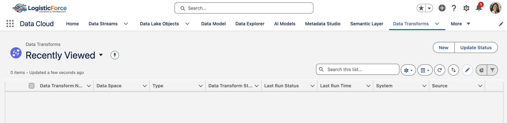
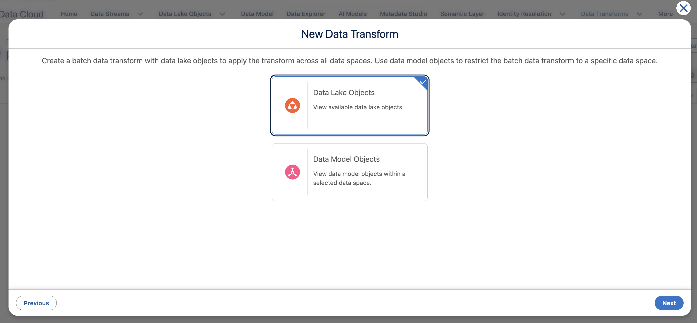
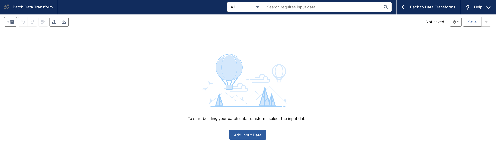
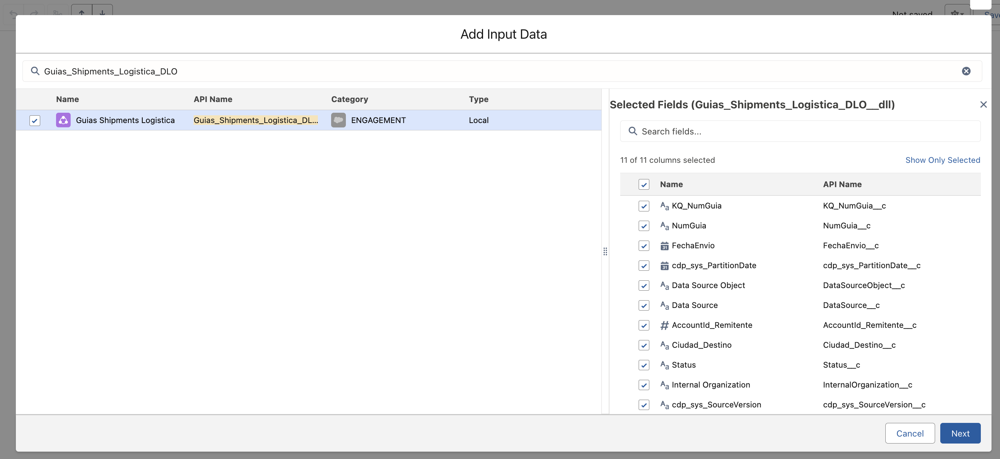
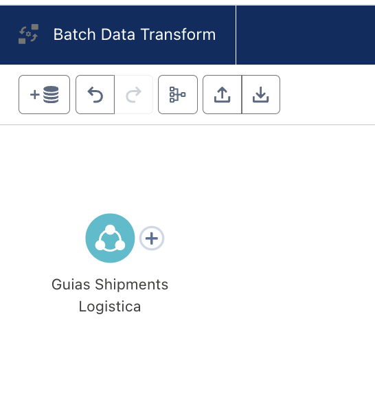
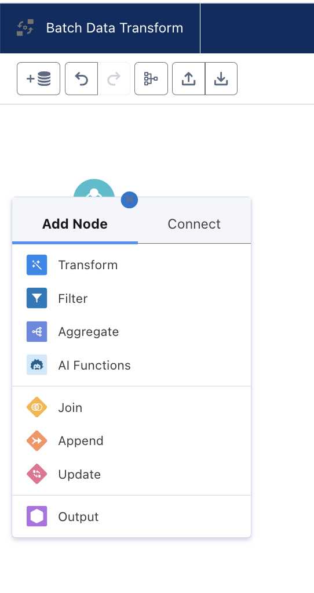
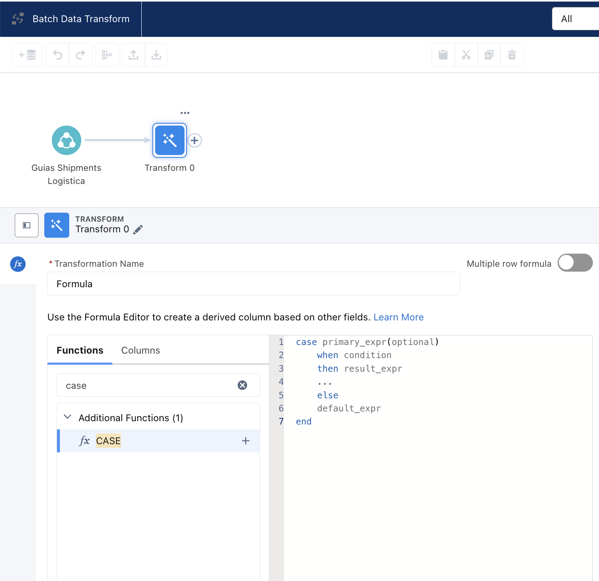

SALESFORCE DATA CLOUD · WORKSHOP HANDS-ON
Data 360
Workshop
Logística
De datos operativos dispersos a inteligencia logística unificada en tiempo real · Hands-on técnico
EL DESAFÍO
El Dilema de los Datos Logísticos
Un operador logístico nacional opera con datos de clientes dispersos entre TMS (guías/waybills), ERP (facturación/RFC), escaneos de sucursal y eventos de tracking. El resultado: identidades duplicadas, SLAs invisibles y retención reactiva.
El Problema Actual
- Remitente y consignatario tratados como entidades separadas
- "Distribuidora del Norte SA de CV" y "Dist. del Norte" son el mismo RFC pero 2 clientes distintos
- BI tarda 24-48h en reportar demoras de cuentas corporativas clave
- Alertas de incidencias llegan tarde o nunca al account manager
- Campañas genéricas sin segmentación operativa real
La Solución: Data 360
- Motor de resolución de identidad determinística y fuzzy sobre RFC + teléfono +52
- Ingestión de streams CSV/API en minutos, sin ETL custom
- Calculated Insights en tiempo real sobre millones de eventos logísticos
- Segmentación dinámica drag-and-drop con reglas operativas
- Activación omnicanal: CRM, Service Cloud, WhatsApp, Webhooks
CASO DE ESTUDIO — ESCENARIO DEL TALLER
LogisticForce
Para los ejercicios prácticos de este taller, simularemos el entorno de datos de LogisticForce, un operador ficticio de paquetería B2B/B2C, mensajería exprés y última milla a nivel nacional con más de 80 sucursales y hubs de distribución (CEDIS). Los datasets, reglas de identidad y métricas que construiremos representan los patrones reales de este tipo de operación en México.
FUNDAMENTOS CONCEPTUALES
¿Por qué Data 360 y no un CRM o Data Warehouse?
Antes de entrar en los ejercicios, entendamos qué hace único a Data 360 y por qué las herramientas que ya usamos no son suficientes para este problema.
🏢 Salesforce CRM Estándar
- Diseñado para gestionar relaciones individuales: un registro = una persona o empresa
- Almacenamiento relacional con límites de datos (GB por org)
- Las guías logísticas (millones/mes) no caben en objetos estándar
- Cada consulta cruza tablas en tiempo de ejecución — lento a escala
- Sin capacidad nativa de resolver identidades duplicadas entre sistemas
☁️ Salesforce Data 360
- Escala de petabytes: ingesta millones de guías diarias sin degradación
- Motor de Identity Resolution que unifica duplicados automáticamente
- Arquitectura columnar optimizada para agregaciones analíticas masivas
- Perfiles unificados en tiempo real disponibles para activación inmediata
- Zero-Copy: los datos del CRM se reflejan sin duplicar almacenamiento
📊 Data Warehouse / BI Tradicional
- Reportes pasivos y diferidos: los datos del día anterior
- Los insights quedan atrapados en dashboards — no desencadenan acción
- Requiere equipo de datos para cada consulta nueva
- La segmentación es una lista estática que envejece en horas
- Completamente desconectado del flujo de trabajo del ejecutivo de ventas
⚡ Data 360 — Activación Operativa
- Calculated Insights que se recalculan con cada evento nuevo
- Segmentos dinámicos y vivos — siempre al día, sin operación manual
- Activación directa: CRM, Marketing Cloud, WhatsApp, Webhooks
- El account manager recibe la alerta en segundos, no el día siguiente
- El mismo perfil alimenta operaciones, ventas y atención al cliente
🧠 Conceptos Clave que Usaremos Hoy
DMO — Data Model Object
El equivalente a una tabla en Data 360, pero pre-optimizada para identidad y escala. En LogisticForce usamos: Account (empresa remitente), Individual (consignatario), Shipment (guía) y DeliveryIncident.
Unified Profile
La vista consolidada de un cliente construida a partir de múltiples fuentes. "Distribuidora del Norte SA" y "Dist. del Norte" con el mismo RFC se convierten en un solo perfil con todas sus guías unificadas.
Party Identification
El mecanismo por el que Data 360 sabe que dos registros son el mismo cliente. Para B2B en México, el RFC es nuestro identificador de mayor confianza — un match exacto es una certeza fiscal.
Zero-Copy Interno
Los datos del CRM de Salesforce se reflejan en Data 360 sin duplicar almacenamiento físico. LogisticForce puede enriquecer sus Accounts del CRM con métricas logísticas sin mover datos entre sistemas.
ARQUITECTURA
Modelo de Datos Fast-Track
DMOs pre-cargados que mapean el modelo logístico del operador al modelo canónico de Salesforce Data 360.
📋 DMO: Account (B2B)
Empresa remitente. Key: RFC_c. Atributos: RazonSocial, NumGuias_LTM, SLA_Rate, Zona.
🙋 DMO: Individual (B2C)
Consignatario / destinatario. Key: Phone_Normalized. Atributos: Nombre, Email, CP_Destino.
📦 DMO: Shipment (Guía)
Evento de envío. Key: NumGuia. Rel: Account ← 1:N → Individual. Atributos: FechaEnvio, Peso, Servicio, Status.
⚠️ DMO: DeliveryIncident
Incidencia operativa. Key: IncidentID. Rel: Shipment ← 1:N. Atributos: Tipo, Severidad, FechaApertura, Resolucion.
Dolor: ETL Interminable
- Semanas de pipelines customizados para cada fuente
- Cambios de esquema rompen todo
- Datos de escaneos en formato diferente a TMS
Solución: Streams en Minutos
- CSV upload directo desde la UI de Data 360
- Schema matching automático con el DMO canónico
- Key identifiers mapeados con 3 clics
📥 Descarga de Datasets
3 archivos CSV listos para subir a Data 360. Contienen duplicados RFC intencionales — identifícalos en el Ejercicio 2.
600 empresas remitentes B2B. Incluye 10 pares con RFC idéntico y razón social/email distinto (AccountId 1000-1019) para el ejercicio de Identity Resolution.
AccountId,RFC,RazonSocial,Email,Telefono,Ciudad 1000,DBA950215AB1,Distribuidora Bajio SA de CV,contacto@bajio.com,5553464097,Tijuana 1001,DBA950215AB1,Distribuidora Bajío,ventas@bajio.com,5562992312,Toluca 1002,BAJA850312KL5,Grupo Bajío SA de CV,contacto@grupobajio.mx,5516480894,Monterrey 1003,BAJA850312KL5,GRUPO BAJIO S.A.,ventas@grupobajio.mx,5581924865,Puebla 1004,MXIN760401AB2,Transportes del Norte SA de CV,admin@tdnorte.mx,5559081935,Aguascalientes
50,000 guías de envío. Fechas en formato YYYY-MM-DD — compatibles con el tipo Date del DMO Shipment. AccountId_Remitente referencia las 600 cuentas B2B del primer dataset.
NumGuia,AccountId_Remitente,FechaEnvio,Status,Ciudad_Destino TRK23001000,1145,2023-06-30,Entregado,Aguascalientes TRK23001001,1064,2024-04-17,En_Transito,Mexicali TRK23001002,1321,2023-08-14,Entregado,Puebla TRK23001003,1002,2024-01-18,Entregado,Ciudad Juárez TRK23001004,1547,2023-09-22,Entregado,Tampico
7,170 incidencias operativas vinculadas a las 50,000 guías. Fechas YYYY-MM-DD. Permite trazabilidad Incidencia → Guía → Cuenta en Ejercicio 4.
IncidentID,NumGuia,FechaApertura,Severidad,TipoIncidencia INC-2023-00000,TRK23050192,2024-08-28T22:25:03Z,Media,Cancelacion_Cliente INC-2023-00001,TRK23045111,2023-07-10T12:49:14Z,Media,Cancelacion_Cliente INC-2023-00002,TRK23021979,2024-02-24T18:52:17Z,Alta,Cancelacion_Cliente INC-2023-00003,TRK23046966,2023-10-05T18:17:10Z,Media,Direccion_Incorrecta INC-2023-00004,TRK23024861,2023-09-26T15:35:37Z,Alta,Cancelacion_Cliente
🗺️ Mapeo de Campos → DMO
| Campo CSV | DMO Target | Campo DMO | Tipo | Rol |
|---|---|---|---|---|
AccountId | Account | Account Id | Text | Primary Key |
RFC | Account | RFC custom | Text | Match Rule |
NumGuia | Shipment | Id | Text | Primary Key |
NumGuia | Shipment | Carrier Tracking Number | Text | Tracking |
FechaEnvio | Shipment | Shipment Date | Date | Event Time |
Status | Shipment | Shipment Status | Text | Status |
AccountId_Remitente | Shipment → Account | AccountId custom | Text | Custom · FK |
IncidentID | Incident | Incident Id | Text | Primary Key |
TipoIncidencia | Incident | Incident Type | Text | Category |
Severidad | Incident | Incident Priority | Text | Priority |
NumGuia | Incident | NumGuia custom | Text | Custom · FK |
FechaApertura | Incident | Detected DateTime | DateTime | Date Partition |
*Nota: Los campos custom se crean con "Add New Field" en el lienzo de Data Mapping. Ejemplos: RFC en Account y AccountId en Shipment. Data 360 agrega el sufijo __c internamente — en el lienzo siempre verás la etiqueta limpia.
🎯 Objetivo Hands-On — Ejercicio 1: Ingesta, Deploy y Mapeo
cuentas_b2b_logistica.csvCuentas B2B LogisticaCuentas_B2B_Logistica_DLOAccountIdCuentas_B2B_StreamAccountAccountId→Account IdPK estándarRFC→RFCcustomRazonSocial→Account NameEmail→Contact Point Emailguias_shipments_logistica.csvGuias Shipments LogisticaGuias_Shipments_Logistica_DLONumGuiaFechaEnvioGuias_Shipments_StreamShipmentNumGuia→IdPK estándarNumGuia→Carrier Tracking NumberEstándarFechaEnvio→Shipment DateDate estándarStatus→Shipment StatusEstándarAccountId_Remitente→AccountIdcustomincidencias_entrega.csvIncidencias EntregaIncidencias_Entrega_DLOIncidentIDFechaAperturaIncidencias_Entrega_StreamIncidentIncidentID→Incident IdPK estándarTipoIncidencia→Incident TypeEstándarSeveridad→Incident PriorityEstándarNumGuia→NumGuiacustomFechaApertura→Detected DateTimeDate PartitionUna vez que los tres Data Streams están desplegados, valida en Data Explorer que los registros llegaron al modelo canónico.
RFC presenteAccountId creado en ShipmentNumGuia y Fecha Apertura creadosIncidentID mapeado como Primary Key📋 Parámetros Exactos del Asistente de Ingesta (CSV Data Stream Wizard)
| Archivo CSV | Data Category | Primary Key | Event Time Field | DLO Label sugerido | Data Stream Name | Org Unit Identifier |
|---|---|---|---|---|---|---|
cuentas_b2b_logistica.csv |
Profile | RFC |
— | Cuentas B2B Logistica |
Cuentas_B2B_Stream |
En blanco |
guias_shipments_logistica.csv |
Engagement | NumGuia |
FechaEnvio ⚡ |
Guias Shipments Logistica |
Guias_Shipments_Stream |
En blanco |
incidencias_entrega.csv |
Engagement | IncidentID |
FechaApertura ⚡ |
Incidencias Entrega |
Incidencias_Entrega_Stream |
En blanco |
⚠️ Notas Críticas de Arquitectura (Gotchas)
- Categorías Inmutables: Si configuras el DLO de Guías o Incidencias como Profile en lugar de Engagement, no podrás usar agrupaciones de tiempo en los Calculated Insights del Ejercicio 3. Data 360 no permite cambiar la categoría después de la creación; tendrías que borrar el stream y empezar de nuevo.
- Nomenclatura: Data 360 copia por defecto el nombre del archivo (incluyendo
.csv) en el Data Stream Name y DLO Label. ¡Límpialo siempre! Si no lo haces, tus objetos quedarán nombrados comocuentas.csv_DLO, afectando tus queries y referencias SSOT futuras.
🛑 Checkpoint Crítico: ¿Existe el campo RFC en tu modelo?
Antes de avanzar a Identity Resolution, debes asegurarte de que el campo custom RFC__c fue creado y mapeado correctamente en el objeto Account. Si falta, Identity Resolution no podrá usarlo para unificar perfiles.
Dolor: Identidad Fragmentada
- Un cliente B2B con 8 sucursales = 8 "empresas" distintas
- "Distribuidora del Norte" y "Dist. del Norte" generan alertas duplicadas
- Consignatario B2C usa teléfono distinto en cada envío
- Sin unificación, el account manager no ve el valor real del cliente
Solución: Identity Graph en Tiempo Real
- Regla determinística: coincidencia exacta en RFC (Tax ID)
- Regla fuzzy: nombre normalizado + teléfono con prefijo +52
- Identity Graph unifica los perfiles automáticamente
- Vista consolidada: 1 perfil = valor real del cliente
🎯 Objetivo Hands-On — Ejercicio 2: Identity Resolution
Ahora que ingresamos las Cuentas B2B, Data 360 detectará duplicados basándose en nuestras Reglas de Match para crear Perfiles Unificados.
AccountL001 (sufijo → UnifiedAccount_L001)Full RefreshRFC (Custom)
Peso 100 · threshold 100%
Account Name
threshold 85%
Most Frequently OccurringEmail y TeléfonoDolor: BI con 24-48h de Retraso
- ETL nocturno: operaciones recibe reportes del día anterior
- Cuenta corporativa con 50 demoras activas pero nadie lo sabe hasta el reporte de mañana
- SLA Rate calculado manualmente en hojas de Excel
- Dashboards desconectados del CRM del account manager
Valor de Negocio (KPIs 360)
Creamos estos Calculated Insights para transformar datos crudos en inteligencia accionable:
- Métrica de Volumen (Comercial): Mide el valor real del cliente unificado. Define quién es VIP.
- Métrica de Incidencias (Operativo): Mide el riesgo de fuga (Churn) detectando problemas en tiempo real.
- El Cruce (U360): Al unir ambas métricas en el siguiente ejercicio, habilitaremos estrategias de retención exactas (ej. "Atender de inmediato a clientes de alto volumen con entregas demoradas").
📐 Objetivo Hands-On — Ejercicio 3: Calculated Insights — Visual & SQL Builder
1 · CONFIGURACIÓN
Active_Delayed_Shipments2 · REQUERIMIENTOS DEL LIENZO VISUAL
- Objeto Base:
Incident(Estándar) - Filtro (Condición):
Incident TypeNO contiene'Resolved' - Agrupación (Dimension):
NumGuia - Medidas (Measures):
COUNTde Incident Id
Dolor: Comunicación Genérica
- Campañas masivas sin distinción entre cliente 500-guías y cliente 5-guías
- No hay forma ágil de identificar cuentas B2B con problemas operativos activos
- Segmentación manual en Excel: 2 días y ya está obsoleta cuando se termina
Solución: Segmentos Dinámicos en Tiempo Real
- Combinar volumen transaccional con incidencias operativas en un segmento
- El segmento se recalcula automáticamente — siempre actualizado
- Drag-and-drop: no requiere SQL ni código adicional
SEGMENTO: Cuentas B2B Clave con Incidencias Críticas
AND
U360_Active_Delayed_Incidents >= 2
→ Resultado con datos sintéticos: 2 cuentas califican (DBA950215AB1, LOGA950820XY2)
🎯 Objetivo Hands-On — Ejercicio 4: Segmentación Dinámica
1 · CONFIGURACIÓN DEL SEGMENTO
Cuentas_B2B_Clave_Incidencias_Criticas2 · REGLAS DE SEGMENTACIÓN (AND)
-
Regla 1 (Volumen):
U360_Monthly_Shipment_Volume>50 - AND
-
Regla 2 (Fricción):
U360_Active_Delayed_Incidents>=2
⚠️ ¿No ves tus métricas en el Canvas?
Si en el Panel de Related Attributes no encuentras las métricas U360_Monthly_Shipment_Volume o Active_Delayed_Count, verifica en la pestaña Calculated Insights que su estado (Last Run Status) sea Success. Las métricas en modo Draft o fallidas no se exponen al motor de segmentación.
Dolor: Insights Atrapados en Dashboards
- El BI analyst sabe que hay demoras, pero el account manager no
- El consignatario no recibe notificación de WhatsApp proactiva
- Alertas manuales por email con 12-24h de retraso
- Operaciones y comercial en silos con datos distintos
Solución: Activación Directa Multi-Canal
- Payload directo a CRM: tarea de alerta en la cuenta del account manager
- Trigger a Marketing Cloud: campaña de retención personalizada
- Webhook a WhatsApp Business: notificación proactiva al consignatario
- Service Cloud: caso automático de alta prioridad
🔌 Flujo de Activación
Segmento
Cuentas B2B con Incidencias Críticas
Target Config
Activation Target → CRM / MKT / Webhook
Payload
Atributos del perfil + métricas calculadas
Acción
Alerta AM + Caso Service Cloud + WA Consignatario
🎯 Objetivo Hands-On — Ejercicio 5: Activación a CRM
Puede sonar ilógico enviar datos de Data Cloud a "Data Cloud". En la nomenclatura de la plataforma, elegir esta opción significa en realidad enviar los datos al CRM Core (Sales Cloud o Service Cloud) de tu instancia. Por otro lado, no vemos destinos como Marketing Cloud o Amazon S3 porque en un entorno de taller, esos conectores externos requieren configurarse y autenticarse previamente en el Setup. El CRM local es el único disponible por defecto.
PARÁMETROS DE CONFIGURACIÓN DEL TARGET
- Target Name:
Logistics_CRM_Alert - Destino (Plataforma): Seleccionar la tarjeta
Data Cloud - Segmento a Conectar:
Cuentas_B2B_Clave_Incidencias_Criticas - Atributos a mapear:
RFC (Custom),Name,U360_Active_Delayed_Incidents,U360_Monthly_Shipment_Volume
Dolor: Faltan Datos de Agrupación
- El CSV de guías trae la
Ciudad_Destino(ej. Tijuana, Puebla, Monterrey). - Sin embargo, para el equipo de operaciones es vital agrupar los envíos por Zona Logística (Norte, Centro, Sur) para asignar camiones y rutas.
- Actualmente, los analistas cruzan esto manualmente en Excel usando un VLOOKUP, lo cual rompe la automatización.
Solución: Transformación Visual (No-Code)
- Data Cloud incluye un motor Visual Builder para Batch Data Transforms.
- Usaremos un nodo Formula para evaluar la ciudad y derivar la zona correspondiente usando una función CASE.
- Esto generará un nuevo Data Lake Object (DLO) enriquecido y listo para ser mapeado al modelo canónico, todo en la misma plataforma.
🎯 Objetivo Hands-On — Ejercicio 6: Data Transform Builder
Zona_Logistica, y volcar el resultado en un nuevo DLO destino.
1 · FLUJO DE NODOS
- 1. Input Node:
Guias_Shipments_Logistica_DLO - 2. Transform Node (Formula): Crear campo nuevo
Zona_Logistica(Tipo: Text) - 3. Output Node:
Guias_Enriquecidas_DLO(Categoría: Engagement)
2 · FÓRMULA DE TRANSFORMACIÓN
CASE
WHEN source.Ciudad_Destino IN ('Monterrey', 'Tijuana', 'Mexicali', 'Ciudad Juárez') THEN 'Norte'
WHEN source.Ciudad_Destino IN ('Toluca', 'Puebla', 'Aguascalientes') THEN 'Centro'
ELSE 'Otra_Zona'
ENDDolor: El Contact Center Tarda 3 Minutos en Reconstruir el Historial
- El agente abre el CRM, busca la cuenta, navega a las listas relacionadas y filtra envíos.
- Con cuentas corporativas (como Medicaltech con cientos de envíos), la interfaz tarda en renderizar.
- No hay una vista pre-materializada; cada llamada recalcula consultas complejas desde cero.
Solución: Data Graph Pre-Materializado
- Data Cloud materializa un objeto JSON profundo desde el Perfil Unificado hacia sus transacciones.
- Un solo llamado de API (GET) devuelve el historial completo en milisegundos.
- Construcción 100% visual (Drag & Drop), sin necesidad de escribir código.
🎯 Objetivo Hands-On — Ejercicio 7: Data Graphs Builder
1 · CONFIGURACIÓN DEL GRAFO VISUAL
- Primary Data Model:
Unified Account L001 - Related Objects:
Shipment - Campos a incluir (Shipment):
Id,Shipment Date,Shipment Status - Data Graph Name:
LOG_CustomerHistory360
2 · RESULTADO ESPERADO (API PAYLOAD)
La plataforma ensamblará automáticamente todo el historial en un JSON de alta velocidad:
{
"account": { "ssot__Id__c": "1111", ... },
"shipments": [
{ "Id__c": "TRK23001015", "ShipmentStatus__c": "Delayed" }
],
"_meta": { "responseTimeMs": 62 }
}Dolor: El Ejecutivo de Ventas Vuela a Ciegas
- Sales Cloud no tiene capacidad de almacenamiento para albergar 50,000 guías transaccionales por cliente.
- El ejecutivo atiende la llamada sin ver las métricas operativas ni el estatus logístico.
- Las incidencias críticas no generan tareas ni alertas automáticas en el CRM.
Solución: Data Actions + Zero Copy UI
- Data Action Target: Dispara un payload directo a un Salesforce Flow cuando entra un registro de Incidencia Crítica.
- Data 360 Related Lists: Despliega las últimas guías e incidencias en el Lightning Record Page de la Cuenta leyendo los datos directamente de Data Cloud (Zero Copy), sin consumir almacenamiento de CRM.
🎯 Objetivo Hands-On — Ejercicio 8: Alertas en Tiempo Real
1 · CONFIGURACIÓN DEL DATA ACTION
- Target:
Salesforce CRM (Core) - Data Model Object:
Incident - Regla (Filtro):
Incident Priority='Alta' - Action Name:
LOG_AlertaIncidencia
2 · MAPEO DE PAYLOAD HACIA FLOW
Mapearemos los atributos de la incidencia para que el Flow sepa de qué guía y cliente se trata:
{
"EventId": "{{Incident Id}}",
"TrackingNumber": "{{NumGuia}}",
"IncidentType": "{{Incident Type}}",
"AlertPriority": "HIGH"
}El Dilema: ¿Cómo se conectan?
En el Módulo 7 creamos un Data Graph (un JSON gigante pre-calculado). En el Módulo 8 creamos un Data Action (una alerta). Son funciones independientes, pero ¿cómo logramos que el usuario en Salesforce vea la magia combinada?
La Solución: PUSH & PULL
El Data Action actúa como un gatillo activo (PUSH) que avisa al CRM cuando algo crítico ocurre. El CRM, al despertar por esa alerta, usa el ID del cliente para jalar proactivamente (PULL) el historial completo desde el Data Graph y presentarlo al agente en milisegundos.
🏗️ Arquitectura de Activación Dual
⚠️ Fase 1: Prerrequisito Obligatorio (Crear el Buzón)
Antes de elegir un camino (Flow o Developer Console), necesitamos construir el "Buzón" en el CRM para que Data Cloud tenga dónde depositar el mensaje.
Lección de Arquitectura: Aunque la documentación oficial de Data Cloud menciona que el sistema "genera" el canal, en entornos empresariales (y en este taller), la mejor práctica es que el Administrador del CRM cree el "Buzón" (Platform Event) por adelantado con los campos exactos. Así garantizamos que Data Cloud tenga dónde depositar el mensaje sin errores de permisos.
🎯 Objetivo Hands-On — Ejercicio 9: Verificación E2E (End-to-End)
Opción A: El Camino Visual
Crearemos un Flow en Salesforce CRM que escuche el Platform Event y cree una Tarea de alta prioridad asignada al Account Manager.
Opción B: El Camino Técnico
Ideal si hay poco tiempo. Nos suscribiremos al canal de eventos desde la Developer Console o Salesforce Inspector para ver el JSON aterrizar en vivo.
🔥 Prueba de Fuego (Validación End-to-End)
Ha llegado el momento de la verdad. Inyectaremos un registro con prioridad crítica en Data Cloud y usaremos Salesforce Inspector Reloaded para interceptar el JSON volando en tiempo real por el bus de eventos del CRM.
Dolor: Escaneos que No Pueden Esperar
- El CEDIS escanea 10,000+ paquetes/hora al llegar y salir
- La carga manual de CSV ocurre una vez al día — los datos tienen 12h de retraso
- Una guía "perdida" no se detecta hasta el reporte nocturno
- El contact center no puede responder "¿dónde está mi paquete ahora?" en tiempo real
Solución: Ingestion API Nativa
- Data 360 expone un endpoint HTTPS nativo para push de eventos JSON
- Latencia de ingesta: <5 segundos hasta disponible en el perfil
- No requiere middleware, Kafka ni broker externo
- 5 líneas de cURL o Python — cualquier sistema puede enviar eventos
📦 Payload de Escaneo CEDIS
{ "data": [ { "NumGuia": "TRK2024098341", "EventType": "SCAN_HUB_LLEGADA", "HubID": "HUB-MTY-01", "HubCiudad": "Monterrey", "Timestamp": "2024-11-15T14:32:00Z", "Operador": "EMP-4421", "Status_Nuevo": "En_Transito", "RFC_Remitente": "DBA950215AB1", "Temperatura_C": 18.5, "Anomalia": false } ] }
🖥️ Envío con cURL y Python
# 1. Obtener Access Token (Connected App OAuth 2.0) TOKEN=$(curl -s -X POST "https://YOUR_ORG.salesforce.com/services/oauth2/token" \ -d "grant_type=client_credentials" \ -d "client_id=YOUR_CLIENT_ID" \ -d "client_secret=YOUR_CLIENT_SECRET" | python3 -c "import sys,json; print(json.load(sys.stdin)['access_token'])") # 2. Enviar evento de escaneo a la Ingestion API de Data 360 curl -s -X POST \ "https://YOUR_ORG.c360a.salesforce.com/api/v1/ingest/sources/LOG_CEDIS_SCANS/scaneventos" \ -H "Authorization: Bearer $TOKEN" \ -H "Content-Type: application/json" \ -d @scan_hub_event.json
import requests, json ORG_URL = "https://YOUR_ORG.salesforce.com" DC_URL = "https://YOUR_ORG.c360a.salesforce.com" CLIENT_ID = "YOUR_CLIENT_ID" CLIENT_SECRET = "YOUR_CLIENT_SECRET" # 1 — Auth token_resp = requests.post(f"{ORG_URL}/services/oauth2/token", data={ "grant_type": "client_credentials", "client_id": CLIENT_ID, "client_secret": CLIENT_SECRET, }) access_token = token_resp.json()["access_token"] # 2 — Push evento payload = {"data": [{"NumGuia": "TRK2024098341", "EventType": "SCAN_HUB_LLEGADA", "HubID": "HUB-MTY-01", "Timestamp": "2024-11-15T14:32:00Z", "Status_Nuevo": "En_Transito", "RFC_Remitente": "DBA950215AB1"}]} resp = requests.post( f"{DC_URL}/api/v1/ingest/sources/LOG_CEDIS_SCANS/scaneventos", headers={"Authorization": f"Bearer {access_token}", "Content-Type": "application/json"}, json=payload) print(resp.status_code, resp.json())
Objetivo Hands-On — Módulo 10
- En Data 360 → Ingestion API → New, crear fuente "LOG_CEDIS_SCANS" con schema del evento de escaneo.
- Crear una Connected App en Salesforce Setup con OAuth 2.0 Client Credentials.
- Ejecutar el script Python (o cURL) con los valores reales de tu org.
- Verificar en el Data Explorer que el evento aparece en <30 segundos.
- Confirmar que el Unified Profile de DBA950215AB1 refleja el nuevo evento de escaneo.
RESULTADO FINAL
Vista 360° — Perfil Unificado del Cliente Logístico
El perfil resultante de un cliente corporativo real tras los 5 ejercicios: identidad unificada, métricas en tiempo real, y alertas activas en el CRM del account manager.
Medicaltech Paredes y Ortega SA de CV
ID ERP: #1111 · Morelia · Segmento: B2B Riesgo Crítico
VERIFICACIÓN
Checklist de Calidad del Workshop
🎨 Branding & Paleta Salesforce
- Headings en #001E5B (Electric Blue 15)
- Acciones/links en #066AFE (Electric Blue 50)
- Fondos alternados: #CFE9FE / #FFFFFF
- Acento Teal #0B827C (instructor blocks)
- Ningún color fuera de la paleta aprobada
- Tipografía: Avant Garde / Salesforce Sans
♿ Accesibilidad
- Contraste ≥4.5:1 en texto normal
- Skip link funcional al contenido principal
- Roles ARIA en nav, main, sections
- focus-visible en todos los botones
- Tablas con aria-label descriptivo
- Etiquetas semánticas: header/main/section/footer
🔧 Funcionalidad
- Toggle Alumno/Instructor funcional
- Botones "Copiar Datos" con feedback visual
- Talk tracks colapsables (instructor mode)
- Progress bar reactiva al scroll
- Toast de confirmación de copiado
- Completamente self-contained (1 archivo)
📋 Contenido
- 5 ejercicios completos con datos sintéticos
- CSVs con duplicados intencionales (RFC)
- Tablas de mapeo de campos → DMO
- SQLs de Calculated Insights
- Payload de activación con placeholders
- Perfil 360° de showcase final
Guía Detallada — Batch Data Transform (Zonas Logísticas)
Esta guía muestra paso a paso y pantalla por pantalla cómo configurar una transformación de datos usando el Visual Builder.
Fase 1 — Selección del Motor y Datos de Origen
1. En Data Transforms, haz clic en New.

2. Selecciona Batch Data Transform.

3. Selecciona Data Lake Objects como origen.

4. En el lienzo vacío, haz clic en Add Input Data.

5. Selecciona el objeto Guias_Shipments_Logistica_DLO.

Fase 2 — Creación de Fórmula Personalizada
1. Haz clic en el (+) junto a tu nodo inicial.

2. Selecciona la opción Transform.

3. Selecciona la columna Ciudad_Destino y en la barra superior haz clic en fx (Custom Formula).

4. Se abrirá el panel lateral de fórmulas, por defecto vacío o con una plantilla.

5. Transformation Name: Escribe Zona_Logistica. Luego, copia y pega la siguiente sentencia en el recuadro blanco para clasificar las ciudades por región operativa:
case
when Ciudad_Destino__c in ('Monterrey', 'Tijuana', 'Mexicali', 'Ciudad Juárez') then 'Norte'
when Ciudad_Destino__c in ('Toluca', 'Puebla', 'Aguascalientes') then 'Centro'
else 'Otra_Zona'
end6. Para evitar errores de precisión, asegúrate de que el Output Type sea Text con longitud 255 y aplica los cambios.
7. En la cuadrícula de vista previa, valida que la nueva columna aparezca calculada correctamente.

Fase 3 — Guardado en Nodo Output
1. Haz clic en el (+) junto al nodo Transform 0 y selecciona Output.
2. Aparecerá el panel izquierdo para configurar el nuevo DLO.

3. Configura el Object Name (Guias_Enriquecidas), Category (Engagement), Primary Key (NumGuia) y Event Time (FechaEnvio) y haz clic en Apply.
Fase 4 — Ejecución del Proceso
1. Verifica que el lienzo esté libre de errores (sin alertas rojas) y haz clic en Save arriba a la derecha.
2. En la ventana modal de guardado, completa los siguientes tres campos exactamente así, y haz clic en Save:
- Batch Data Transform Name:
Transformacion Zonas Logisticas - Definition Name:
Transformacion Zonas Logisticas Definition(suele autocompletarse) - Description:
Transformación del campo Ciudad_Destino mediante Custom Formula (CASE) para enriquecer las guías B2B con su respectiva Zona Logística.
3. Una vez guardado, ubica el botón desplegable (con forma de triángulo invertido ▼) ubicado en la esquina superior derecha, justo al lado del botón Save. Haz clic para desplegar el menú y selecciona la opción Run Now.
4. En la pantalla de confirmación de ejecución, configura la ventana de datos (All data) si se solicita, y finaliza el proceso.